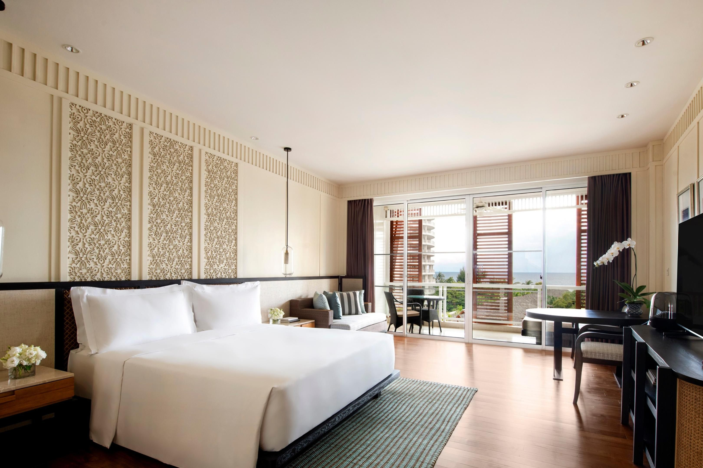

ดอยช้าง
ตั้งอยู่บ้านดอยช้าง ตั้งอยู่หมู่ที่ 3 ตำบลวาวี อำเภอแม่สรวย จังหวัดเชียงรายจุดชมวิวดอยช้างอยู่สูงถึง 1,485 เมตร ด้านบนสามารถมองเห็นวิวได้โดยรอบ มีการจัดภูมิทัศน์ด้วยการปลูกแปลงดอกไม้และสวนสน อากาศเย็นสบายตลอดปี อุณหภูมิเฉลี่ย 18 องศาเซลเซียส
ดอยช้างมีชื่อเสียงในเรื่องของเป็นแหล่งปลูกกาแฟที่ใหญ่ที่สุดแห่งหนึ่งในประเทศไทย มาเที่ยวที่นี่ นักท่องเที่ยว จะได้ชมสวนกาแฟที่สุกอร่ามเต็มดอย พร้อมๆกับชมดอกซากุระหรือนางพญาเสือโคร่งที่กำลังบาน สีสันสดใส ชมพู อีกทั้งเพลินตา กับศิลปะวิถีชาวบ้าน
จุดชมวิวดอยช้างเป็นจุดชมพระอาทิตย์ตกที่สวยมากแห่งหนึ่ง
เกาะขาม
ตั้งอยู่ในพื้นที่ตำบลแสมสาร อำเภอสัตหีบ จังหวัดชลบุรีเกาะขามมีแนวปะการังนํ้าตื้นที่สมบูรณ์มากมาย รวมพื้นที่ปะการังรอบเกาะขามมีทั้งหมดราว ๆ 83,000 ตารางเมตร ที่นี่จึงเหมาะมาก ๆ สำหรับคนที่ชอบดำนํ้าชมปะการัง อีกทั้งยังมีเส้นทางศึกษาธรรมชาติขึ้นไปยังจุดชมวิวด้านบนเขา ซึ่งสามารถมองเห็นท้องทะเลสัตหีบได้ไกลสุดลูกหูลูกตา
นักท่องเที่ยวต้องขึ้นเรือจากฐานทัพเรือสัตหีบและมีจำนวจำกัดต่อวันเพื่ออนุรักษ์สิ่งแวดล้อม
หาดไร่เลย์
ตั้งอยู่ที่ตำบลอ่าวนาง อำเภอเมือง จังหวัดกระบี่ อยู่ในเขตพื้นที่ของอุทยานแห่งชาติหาดนพรัตน์ธารา-หมู่เกาะพีพีหาดไร่เลย์ตะวันตก (หาดน้ำเมา) เป็นที่ตั้งของถ้ำพระนาง ซึ่งภายในมีศาลพระนางที่ชาวเรือแถบนี้เคารพสักการะ เหมาะสำหรับชมทัศนียภาพของพระอาทิตย์ตก
หาดไร่เลย์ตะวันออก มีชื่อเสียงและเป็นที่นิยมของนักท่องเที่ยวชาวต่างชาติ คือ การปีนผา
ภูลมโล
สถานที่ท่องเที่ยวชื่อดังที่เต็มไปด้วยเสน่ห์ของธรรมชาติ โดยเฉพาะในช่วงฤดูหนาว ซึ่งเป็นเวลาที่ดอกนางพญาเสือโคร่งบานสะพรั่งปกคลุมทั่วทั้งภูเขา เปลี่ยนพื้นที่ให้กลายเป็นภาพความงดงามสีชมพูสดใส นอกจากนี้ยังมีอากาศบริสุทธิ์และบรรยากาศที่เงียบสงบ เหมาะสำหรับผู้ที่ต้องการสัมผัสความงามของธรรมชาติโดยปกติดอกนางพญาเสือโคร่งที่ภูลมโลจะบานในช่วงเดือนมกราคม-กุมภาพันธ์ของทุกปี ขึ้นอยู่กับสภาพอากาศของแต่ละปี โดยปกติแล้วดอกจะเริ่มบานในช่วงต้นเดือนมกราคม
ทุ่งโปรยทอง
ตั้งอยู่ในเขตชุมชนบ้านแสมภู่ ปากน้ำประแส อำเภอแกลง มีพื้นที่กว่า 6,000 ไร่จุดเด่น คือต้นโปรงที่ขึ้นหนาแน่นอยู่เต็มพื้นที่สะท้อนสีเขียวอ่อน จนกลายเป็นทุ่งโปรงทองที่สวยงามแปลกตา
เส้นทางศึกษาธรรมชาติเป็นสะพานทอดยาวประมาณ 1 กิโลเมตร ไปสิ้นสุดที่ทะเลประแสซึ่งเป็นที่ตั้งของเรือรบหลวงประแส หากเดินด้วยเท้าใช้เวลาประมาณ 1 ชั่วโมงกว่า
สะพานไม้ได้ลัดเลาะไปตามป่าโกงกางประมาณ 200 เมตร จะทะลุออกมาจนเจอ ทุ่งโปรงทอง ที่เต็มไปด้วยต้นโปรงขึ้นเบียดกันแน่น
บ้านอิต่อง ปิล็อก
ตั้งอยู่ที่ตำบลปิล็อก อำเภอทองผาภูมิ จังหวัดกาญจนบุรีบ้านอีต่อง เป็นที่ตั้งของเหมืองปิล็อก ที่เคยรุ่งเรืองในอดีต เมื่อราวปี พ.ศ. 2483 เหมืองขุดแร่ดีบุกที่มีคนงานร่วม 600 คน จนราคาแร่ทั่วโลกตกต่ำ ผลจากการตัดราคาของแร่จากจีน ประมาณปี พ.ศ. 2527-2528 ความรุ่งโรจน์ของการขุดแร่ได้จบลง ปิล๊อกที่เคยรุ่งเรือง มีตลาดที่เฟื่องฟู เคยมีโรงภาพยนตร์ถึง 2 โรงก็เงียบเหงา เหมืองแร่ต่างๆ ที่นี่ทยอยปิดตัวลง คนงานเริ่มทยอยกลับบ้านแยกย้ายกันไป ปัจจุบันนี้รายได้หลักของหมู่บ้านอีต่องคือ การท่องเที่ยว ที่พักโฮมสเตย์ เหมาะสำหรับผู้ที่ชอบธรรมชาติ อากาศดี อยู่สูงจากระดับน้ำทะเลกว่า 1,000 เมตร เมืองที่ร่ำรวยด้วยหมอก ปัจจุบันเป็นจุดหมายปลายทางที่นักท่องเที่ยวหลายคนต้องการมาสัมผัส ต้องเดินทางผ่าน 399 โค้ง และยังมีแหล่งท่องเที่ยวใกล้ๆ คือ น้ำตกจ๊อกกระดิ่น เนินช้างศึก อุทยานแห่งชาติทองผาภูมิ
วัดร่องขุ่น
ตั้งอยู่ที่ตำบลป่าอ้อดอนชัย อำเภอเมือง จังหวัดเชียงรายถือเป็นศาสนสถานที่สำคัญแห่งหนึ่งของจังหวัดเชียงราย เป็นผลงานการออกแบบและก่อสร้างโดย อาจารย์เฉลิมชัย โฆษิตพิพัฒน์ จิตรกรไทยที่มีผลงานจิตรกรรมไทยหลากหลาย จนได้รับการยกย่องขึ้นเป็น ศิลปินแห่งชาติ สาขาทัศนศิลป์ (จิตรกรรม) ในปี พ.ศ. 2554 ผู้ซึ่งอุทิศตนสร้างวัดวัดร่องขุ่นอันยิ่งใหญ่นี้ขึ้นเพื่อถวายเป็นพุทธบูชา
สิ่งที่โดดเด่นเมื่อมาเยือนวัดร่องขุ่นก็คือ "พระอุโบสถ" ที่มีความโดดเด่นด้วยเอกลักษณ์ทางศิลปะ และสถาปัตยกรรมที่แสนวิจิตรอลังการ ไม่ว่าจะเป็นรูปทรงช่อฟ้า ใบระกา และรายละเอียดซึ่งแตกต่างไปจากวัดแห่งอื่น โดยตัวพระอุโบสถที่เน้นสีขาวบริสุทธิ์นั้นสื่อแทนพระบริสุทธิคุณ ขณะที่กระจกขาววาววับจับประกายระยิบระยับ หมายถึงพระปัญญาธิคุณของพระพุทธองค์ที่โชติจรัสชัชวาลไปทั่วทั้งโลกมนุษย์และจักรวาล

โรงแรมอินเตอร์คอนติเนนตัล หัวหิน รีสอร์ท
4.6/5 ดาว | อ่านเพิ่มเติมได้ที่ Hotels
33 33 ถ.เพชรเกษม ตำบลหัวหิน อำเภอหัวหิน ประจวบคีรีขันธ์
คาทิลิยาเมาท์เทน รีสอร์ท แอนด์ สปา
4.6/5 ดาว | อ่านเพิ่มเติมได้ที่ Hotels
388 Pha Sang อำเภอแม่จัน เชียงราย